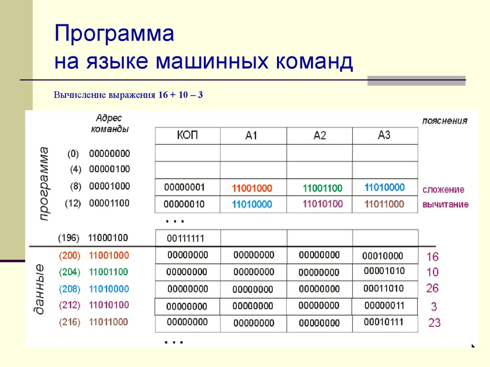

Создание ПО
Основные этапы развития технологии создания ПО:
-
Стихийное программирование (до середины 60-х).
-
Структурный подход (70-80-е годы).
-
Объектный подход (80-90-е годы).
-
Паттерное программирование и компонентный подход.
Компьютерная программа
-
комбинация компьютерных инструкций и данных, позволяющая аппаратному обеспечению вычислительной системы выполнять вычисления или функции управления (стандарт ISO/IEC/IEEE 24765:2010)
-
синтаксическая единица, которая соответствует правилам определённого языка программирования, состоящая из определений и операторов или инструкций, необходимых для определённой функции, задачи или решения проблемы (стандарт ISO/IEC 2382-1:1993).
Понятие алгоритма
В
интуитивном (неформальном) понимании «алгоритм» – это описание
вычислительного процесса.
АЛГОРИТМ, алгорифм, – точное предписание, которое задает
вычислительный процесс (называемый в этом случае
алгоритмическим), начинающийся с произвольного исходного данного
(из некоторой совокупности возможных для данного алгоритма
исходных данных) и направленный на получение полностью
определяемого этим исходным данным результата.
В качестве рабочего определения понятия «алгоритм» используем
определение Международной организации по стандартизации
(документ СТ ИСО 2382/1 – 84):
АЛГОРИТМ (ALGORITHM) – конечный набор предписаний, определяющий
решение задачи посредством конечного количества операций.
Характерные свойства алгоритма:
1) дискретность – алгоритм состоит из отдельных команд,
2) определенность – каждая команда алгоритма определена и указан
способ ее выполнения,
3) результативность – алгоритм всегда приводит к получению
результата,
4) правильность – сам алгоритм правильный и применение
правильное,
5) массовость – алгоритм разработан для решения класса
однотипных задач,
6) конечность – результат достигается за конечное число шагов.
Совокупность задач, к которым применим алгоритм, называется
областью применимости алгоритма.
Исполнитель алгоритмов
Алгоритм всегда разрабатывают для конкретного исполнителя.
Исполнитель алгоритмов – это объект
(кто или что), формально исполняющий алгоритмы. Исполнитель
характеризуется системой команд (СКИ) и средой, в которой
исполняет алгоритмы. Если исполнитель получает команду, не
входящую в его систему команд, то он сообщает «не понял». Если
исполнитель получает команду, которую не может исполнить по
какой-либо причине, то он сообщает «не могу».
Процесс разработки программы.
Жизненный цикл ПО (Software Development Life Cycle, SDLC) — это последовательность этапов, через которые проходит программный продукт — от идеи до вывода из эксплуатации.
Основные этапы жизненного цикла ПО
- Планирование и анализ требований. Определяют, зачем нужен продукт, какие задачи он должен решать и какие требования к нему предъявляются. Собирают пожелания заказчика и пользователей, фиксируют функциональные и нефункциональные требования (например, производительность, безопасность). Результат — документ с требованиями (SRS).
- Проектирование. Прорабатывают архитектуру системы, выбирают технологии, базы данных, интерфейсы взаимодействия. Создают схемы и диаграммы (например, UML), описывают, как компоненты будут взаимодействовать. Результат — проектная документация (SDD).
- Разработка. Программисты пишут код, реализуют функционал согласно проекту. На этом этапе активно используют системы контроля версий (Git) и стандарты кодирования.
- Тестирование. Проверяют работоспособность и качество ПО: проводят модульное, интеграционное, системное, приёмочное тестирование, ищут баги и уязвимости. Часто применяют автоматизированные тесты и нагрузочные проверки.
- Развёртывание (релиз). Продукт устанавливают в рабочую среду, делают доступным пользователям. Это может быть публикация в магазинах приложений, деплой на сервер или установка на устройства заказчика.
- Сопровождение и поддержка. После релиза команда исправляет ошибки, выпускает обновления, добавляет новые функции, реагирует на обратную связь пользователей.
- Вывод из эксплуатации. Когда продукт устаревает или его заменяют новым, его отключают, переносят данные, уведомляют пользователей и закрывают инфраструктуру.
Популярные модели жизненного цикла
- Каскадная (Waterfall). Этапы идут строго друг за другом: нельзя начать разработку, пока не закончено проектирование. Подходит для проектов с чёткими и стабильными требованиями.
- V‑образная. Похожа на каскадную, но тестирование планируют параллельно с разработкой: каждому этапу проектирования соответствует свой уровень тестирования (например, модульному тестированию — детальное проектирование). Часто используют там, где критична надёжность (медицина, авиация).
- Итеративная и инкрементная. Продукт создают частями (инкрементами) в нескольких циклах. На каждой итерации получают рабочую версию и учитывают обратную связь. Подходит, если требования могут меняться.
- Спиральная. Сочетает итерации с анализом рисков: на каждом витке оценивают риски, проектируют, разрабатывают и тестируют, затем решают, продолжать ли проект.
- Agile. Гибкая разработка короткими спринтами с частыми релизами и тесным взаимодействием с заказчиком. Примеры методологий — Scrum, Kanban.
- DevOps. Не столько модель цикла, сколько подход: непрерывная интеграция и доставка (CI/CD), когда разработка, тестирование и развёртывание тесно связаны и автоматизированы.
Пример на простом проекте
Допустим, делают веб‑калькулятор:
-
На этапе требований решают, какие операции он должен поддерживать и как выглядеть.
-
В проектировании выбирают стек (например, React + Node.js), продумывают API и структуру базы (если нужна история расчётов).
-
При разработке пишут фронтенд и бэкенд, подключают тесты.
-
На тестировании проверяют корректность расчётов, работу на разных браузерах, безопасность ввода.
-
После развёртывания пользователи начинают им пользоваться, команда собирает отзывы и исправляет недочёты.
Блок схема разработки ПО.

Процесс разработки включает следующие действия:
- подготовительную работу;
- анализ требований, предъявляемых к системе;
- проектирование архитектуры системы;
- анализ требований, предъявляемых к программному обеспечению;
- проектирование архитектуры программного обеспечения;
- детальное проектирование программного обеспечения;
- кодирование и тестирование программного обеспечения;
- интеграцию программного обеспечения;
- квалификационное тестирование программного обеспечения;
- интеграцию системы;
- квалификационное тестирование системы;
- установку программного обеспечения;
- приемку программного обеспечения.
Исполнители - объекты исполняющие программу.
Исполнителем алгоритма может быть человек или автоматическое устройство – компьютеры, роботы, станки, спутники, сложная бытовая техника и даже детские игрушки. Каждый алгоритм создается в расчете на вполне конкретного исполнителя.
Различают формальных и неформальных исполнителей.
-
Формальный исполнитель одну и туже команду выполняет одинаково.
-
Неформальный исполнитель может выполнять команду по-разному.
Формальные исполнители необычайно многообразны, но для каждого из них можно указать следующие характеристики: круг решаемых задач (назначение), среду, систему команд и режим работы.
- Круг решаемых задач. Каждый исполнитель создаётся для решения некоторого круга задач – построения цепочек символов, выполнения вычислений, построения рисунков на плоскости и так далее.
- Среда исполнителя – условия, при которых возможно исполнение алгоритма.
- Система команд исполнителя (СКИ) – перечень действий, который способен понять и выполнить исполнитель.
- Система отказов исполнителей – перечень отказов возникающий, при невозможности выполнения алгоритма в конкретных условиях.
-
Режимы работы исполнителя – режим непосредственного и программного управления. Непосредственное управление – исполнитель ждёт команды от человека и каждую команду выполняет немедленно. Программное управление – исполнителю задаётся последовательность команд (программа), а затем исполняет команды в автоматическом режиме. Некоторые исполнители работает только в одном из режимов.
Типы процессоров
Конструктивно процессоры для ПК делятся на три типа: центральные, с графическим ускорителем и однокристальные системы.
Классические центральные процессоры помимо вычислительных ядер (от двух до десяти) имеют только встроенную кеш-память и контроллер оперативной памяти. Большинство же современных процессоров обладают интегрированным графическим ускорителем, который является заменой недорогой дискретной видеокарты.
По обработке команд можно выделить следующие типы
1) Скалярные (SISD Single Instraction Single Datae) обрабатывает
один элемент данных за одну инструкцию
2) Векторные (SIMD Single Instraction Midle) обрабатывает
несколько данных выполняя над ними одну операцию
3) MISD (Midle instruction single date) несколько вычислительных
устройств выполняют различные операции над одним данным
4) MIMD (Midle instruction midle date) несколько вычислительных
устройств выполняют различные операции над различными данными
(например многопроцессорная система из скалярных процессоров)
5) Конвейер над данными движущимися через конвейер выполняются
различные операции на каждом шаге конвейера
6) Систолические матрицы данные обрабатываются в процессорных
элементах расположенных в виде массива
Каждый из этих "типов" можно разделить еще на подтипы. В чистом виде каждый тип встречается редко, обычно процессор (микроконтроллер) может принадлежать сразу к двум типам (например векторно-конвейерный)
Команды процессора
Команда микропроцессора состоит из инструкции и обозначается код операции КОП (или INS в англоязычной литературе). Форматы команд очень сильно зависит от структуры процессора.
Система команд - это набор допустимых для данного процессора управляющих кодов и способов адресации данных.
Система команд жестко связана с конкретным типом процессора, поскольку определяется аппаратной структурой блока дешифрации команд, и обычно не обладает переносимостью на другие типы процессоров (хотя может иметь место совместимость “снизу-вверх” в рамках серии процессоров, как, например, в серии i80x86 ).
По реализации команд все процессоры можно разделить на:
-
Процессоры с расширенной системой команд (CISC — процессоры).
-
Процессоры с сокращенной системой команд (RISC — процессоры).
Первый тип процессоров (CISC)
характеризуется небольшим числом регистров, но
большим количеством команд, более длинным форматом их записи в
байтах и, соответственно, более медленной работой. Такие
процессоры используются в универсальных вычислительных системах
и являются стандартом для микрокомпьютеров.
Второй тип процессоров (RISC)
характеризуется меньшим количеством команд и,
соответственно, более высоким быстродействием. Но сложные
операции в этом случае приходится разбивать на
последовательность простейших команд, что не всегда эффективно.
Поэтому такие процессоры используются в специализированных
вычислительных системах, ориентированных на выполнение
однообразных операций.
Каждый процессор или семейство процессоров имеет свой собственный набор команд. Инструкции - это наборы битов, цифр или символов, которые соответствуют машинным командам. Таким образом, набор команд специфичен для класса процессоров, использующих (в основном) одну и ту же архитектуру.
